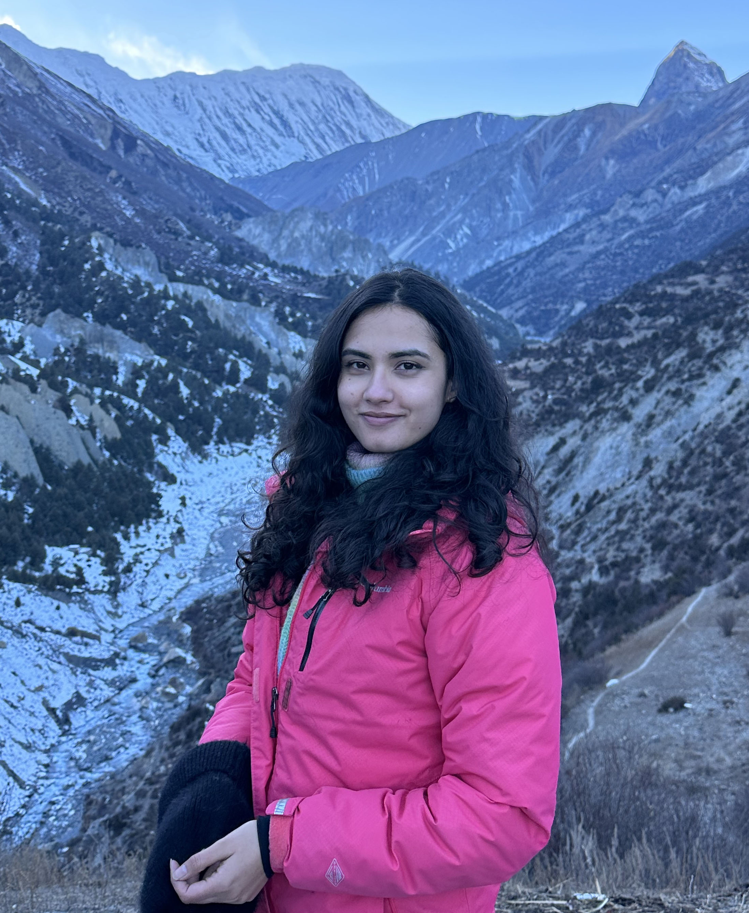

Students
Current PhD and masters students I advise or co-advise, along with recent alumni.
Current Advisees

Sophiya Gyanwali
PhD Student in GIS
Committee: Dr. Aaron Flores (Chair), Dr. Dylan Connor, Dr. Sara Meerow
Sophiya is a social scientist and human geographer specializing in social vulnerability, urban development, and environmental justice in the context of flooding. She holds an M.S. in Geography from Virginia Tech and a B.S. in Environmental Science from Kathmandu University in Nepal. Her doctoral research investigates development patterns within FEMA-designated and federally-overlooked flood zones over time, examining the social determinants that drive these trends and their implications for vulnerable communities.
Alamin Molla
PhD Student in GIS
Committee: Dr. David Sailor (Co-Chair), Dr. Aaron Flores (Co-Chair), Dr. Heather Baier
Alamin is an urban scientist and geospatial data expert specializing in spatial data science, urban climate, and environmental justice. He holds an M.S. in Geoinformatics & Geospatial Intelligence from George Mason University, an M.S. in Geography from Auburn University, and a B.S. in Urban and Rural Planning from Khulna University, Bangladesh. His doctoral research integrates GeoAI, UAV technology, and advanced geospatial methods to address urban challenges such as extreme heat, air quality, and climate resilience, with emphasis on inequalities in heat exposure among marginalized communities.
Ritvik Shukla
PhD Candidate in Environmental Social Science
Committee: Dr. Abigail York (Chair), Dr. Danae Hernandez-Cortes, Dr. Kelli Larson, Dr. Aaron Flores
Ritvik is a just transition scientist with a particular interest in mixed methods research. He holds a B.S. in Environment and Natural Resources from Ohio State and an M.S. in Earth and Environmental Resources Management from the University of South Carolina. His dissertation examines the supply, demand, and governance of public electric vehicle charging infrastructure in Maricopa County, Arizona. He is also engaged in just transition work investigating the social and economic needs of communities impacted by coal plant closures in Arizona.

Hyunho Lee
PhD Candidate in Geography
Committee: Dr. WenWen Li (Chair), Dr. Aaron Flores, Dr. Hannah Kerner
Hyunho is a geospatial data scientist and GeoAI expert specializing in satellite-based environmental mapping. He holds an M.S. in Computer Science from KAIST (Korea Advanced Institute of Science and Technology) and a B.S. in Information and Computer Engineering from Ajou University, South Korea. His doctoral research focuses on deep learning for geospatial data, particularly satellite imagery, with an emphasis on model interpretability for intelligent environmental mapping and satellite-based flood extent mapping.

Shaylynn Trego
PhD Candidate in Geography
Committee: Dr. Sara Meerow (Co-Chair), Dr. David Hondula (Co-Chair), Dr. Ladd Keith (U of Arizona), Dr. Aaron Flores
Shaylynn is an NSF GRFP and INTERN fellow committed to conducting socially relevant research on human-environment interactions, particularly how people can cope with increasingly extreme heat. Her work offers insights on different ways to communicate and visualize extreme heat risk, and many of her projects have been co-produced with city stakeholders. She aims to enhance understanding of how social and spatial inequalities in human-environment relationships affect well-being among disadvantaged groups.
Consolata Macharia
PhD Student in Geography
Committee: Dr. Sara Meerow (Chair), Dr. Aaron Flores
Consolata is a human-environmental geographer whose research explores the intersections of urban climate resilience, green infrastructure planning, environmental justice, and urban climate governance. She examines how green infrastructure can serve as both a resilience strategy and a tool for advancing environmental justice, ensuring that historically marginalized communities are prioritized in urban adaptation efforts. Her work critically analyzes governance structures and policy frameworks to identify gaps perpetuating climate injustices.

Leonardo Prado
PhD Student in Geography
Committee: Dr. Jose-Benito Rosales Chavez (Co-Chair), Dr. Jenni Vanos (Co-Chair), Dr. Aaron Flores
Leonardo is an environmental social scientist and geographer specializing in urban climate, human thermal comfort, and environmental justice through the lens of Critical Physical Geography. He holds a master's degree in environmental planning and management from the Federal University of Rio de Janeiro, Brazil. His research integrates qualitative and quantitative methods to examine the heat exposure experienced by street vendors across Los Angeles, Mexico City, and São Paulo. He also collaborates with Indiana University, São Paulo State University (UNESP), and the National Integrated Heat Health Information System (NIHHIS).
Mahin Rahman
Masters Student in Urban & Environmental Planning
Committee: Dr. Sara Meerow (Chair), Dr. Aaron Flores, Dr. Daoqin Tong
Mahin is an urban planner and spatial data analyst focused on climate resilience, heat vulnerability, and environmental justice. He earned his B.S. in Urban and Regional Planning from Khulna University of Engineering and Technology, Bangladesh. His thesis explores how different environmental and social indicators influence spatial priorities for green infrastructure in Phoenix, including mean radiant temperature, land surface temperature, flood risk data, ecological variables, and the Social Vulnerability Index.
Alumni
-
MA
Carson Metzler (Geography, 2023-2025)
Sleeping in the Heat: Insights from the HeatSuite Phoenix Pilot Study -
MA
Bradly Mannix (Geography, 2023-2025)
Urban Food Equity: Addressing Food Diversity Disparities in HOLC Redlined Communities of Phoenix -
PhD
Yilei Yu (GIS, 2023-2025)
Spatial Data Science for Natural Hazards and the Built Environment